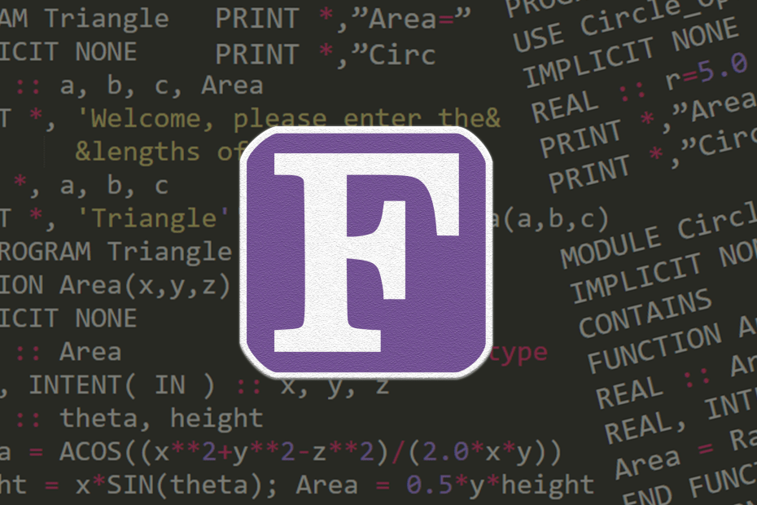

Third Generation
Languages
Most popular general-purpose languages today, such as C, C++, C#, Java, BASIC and Pascal, are also
third-generation languages, although each of these languages can be further subdivided into other
categories based on other contemporary traits.
*Most 3GLs support structured programming
structured programming
Structured programming is a programming paradigm aimed at improving the clarity, quality, and development time of a computer program by making extensive use of the structured control flow constructs of selection (if/then/else) and repetition, block structures, and subroutines.
Examples Of 3GLs
Fortran
Fortran is a general-purpose, compiled imperative programming language that is especially suited to numeric computation and scientific computing.
ALGOL
ALGOL is a family of imperative computer programming languages originally developed in 1958. ALGOL heavily influenced many other languages and was the standard method for algorithm description used by the Association for Computing Machinery (ACM) in textbooks a

COBOL
COBOL is a compiled English-like computer programming language designed for business use. It is an imperative, procedural and, since 2002, object-oriented language. COBOL is primarily used in business, finance, and administrative systems for companies and governments.